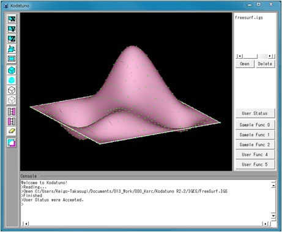
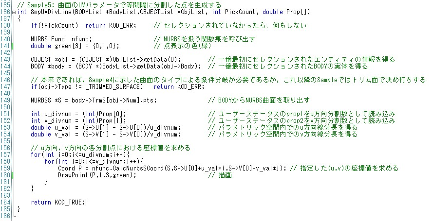
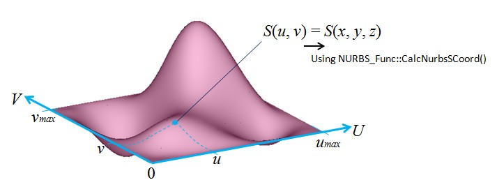

|
|
|
Prev
Index
Next |
(Ex. 5) NURBS曲面を指定した分割数で分割した点を生成する
この例題は2.6.3 NURBS曲線を指定した分割数で分割した点を生成するの曲面バージョンです．
"SampleFunc1.cpp"のSmpUVDivLine()を実行します．＜実行手順＞
- Kodatunoアプリケーションを起動し, 適当なIGESデータを1つ読み込みます．
- 表示されたBodyから面をピックします．ピックする面の数は1個にしてください．
- "User Status"からMode5を選択し，Prop1にU方向分割数，Prop2にV方向分割数を整数で入力します．
- "Sample Func 1"ボタンを押します．
- 選択した面上に分割点が生成されたことを確認してください．

＜ソース解説＞
今回はMode5を選択し，"Sample Func1"ボタンを押しました．これによってSmpUVDiveLine()が実行されます．
では，SmpUVDiveLine()を見てみましょう． 138〜149行目まではこれまでの例題と同じですので，説明を省略します．151行目から見ていきましょう．
151, 152行目では"User Status"のProp1，Prop2で入力したU方向V方向それぞれの分割数の値を取り出しています．
次に153，154行目ですが，これを理解するためには，NURBS曲面の知識が若干必要になります． (Ex. 3)の冒頭で，NURBS曲線/曲面を定義した構造体の変数は，Kodatunoモジュールを使う際， 気にしなくてもよいようになっていると述べましたが，本例題ではあえてその一部を解説し，Kodatunoモジュール自体の理解へとつなげたいと思います．
（Ex. 3)で少しだけ触れましたが，NURBSはパラメータを媒介した表現になっています．下図を参照してください． この図ではU-V座標系上の0-u_max, 0-v_maxの範囲でNURBS曲面が存在しており，その範囲内におけるある座標値(u,v)は，3次元空間における 曲面上の点(x,y,z)に対応しています．(u,v)から(x,y,z)への変換は，(Ex. 4)で示したNURBS_Func::CalcNurbsSCoord()によって行うことができます． NURBS曲面が存在する範囲は，そのNURBS曲線/曲面を作成したCADソフト等によってまちまちで，決まりはありません．上の図では0からスタートしていますが， 0でない場合も当然ありますので，正確にはu_min, v_minが存在し，今回はたまたま両方とも0だったということになります．
KodatunoにおいてNURBS曲面を表す構造体NURBSSで，曲面の存在範囲を格納している変数がU[2]とV[2]です(BODY.h 135-136行目)． U[0]にu_minが，U[1]にu_maxが格納されています．Vに関しても同様です．(ちなみにNURBS曲線の場合はBODY.h 118行目のV[2]の1つになります．)
ここでようやくソースに戻ります．ソースの153行目は，u_maxからu_minを引いて，指定した分割数で割っています．つまり，NURBS曲面のパラメータ座標上で 等分割したときの区間長さを求めています．154行目は同様にv方向についての区間長さを求めています． そして157行目から162行目にかけて，U, V両方向の分割点を求め，3次元空間上の座標に変換しています．
以上で(Ex. 5)の解説は終了ですが，153〜162行目の一連のNURBSS構造体の変数を利用した分割点算出は，実は1つの関数としてKodatunoモジュールに実装されています．
それがNURBS_Func::CalcDeltaPtsOnNurbsS()です．153〜162行はこの関数によって1行に置き換えることができます．実際に"NURBS_Func.cpp"の3937行目をご覧ください． NURBS_Func::CalcDeltaPtsOnNurbsS()の実体が記述されていますが，例題の153〜162行目となんら変わっていないことが分かると思います．
次はNURBS曲面と平面との干渉を扱った例題になります．
| Copyright(C) Kodatuno Development Team, 2011 | Last modified: Nov. 11, 2011 |